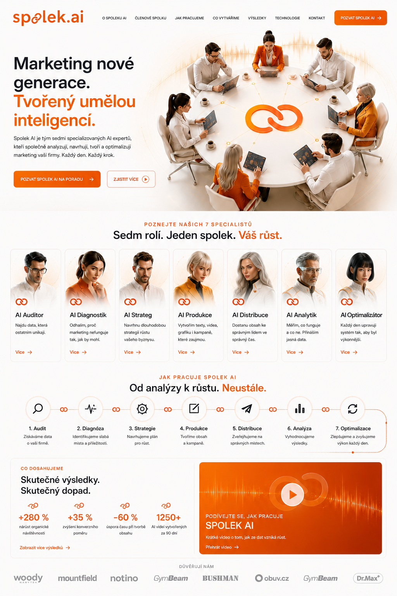
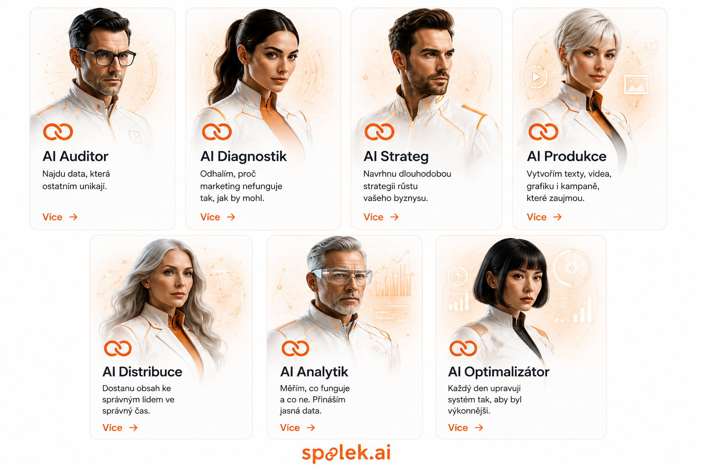
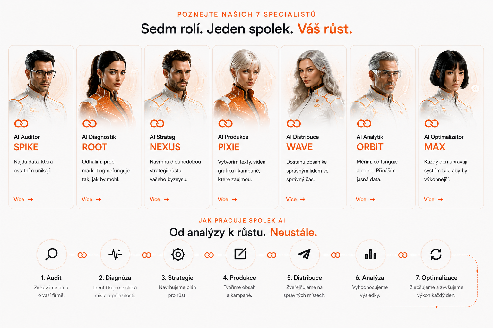

Externí AI marketingové oddělení pro firmy.
Ucelený systém, který propojuje umělou inteligenci, automatizaci, marketing, obchodní strategii a analytiku do jednoho spolupracujícího celku.


Co je Spolek.ai
Spolek.ai je nový koncept externího AI marketingového oddělení pro firmy.
Nejsme klasická marketingová agentura ani dodavatel jednotlivých služeb. Vytváříme ucelený systém, který propojuje umělou inteligenci, automatizaci, marketing, obchodní strategii a analytiku do jednoho spolupracujícího celku.
Naším cílem není prodávat jednotlivé výstupy, jako jsou články, grafika nebo reklama. Pomáháme firmám dlouhodobě růst prostřednictvím standardizovaného systému, který kombinuje zkušenosti lidí s možnostmi moderní umělé inteligence.
Spolek.ai představuje nový způsob spolupráce mezi firmou a AI. Každý klient získává tým specializovaných AI odborníků, kteří společně analyzují situaci, navrhují strategii, vytvářejí obsah, publikují jej, vyhodnocují výsledky a průběžně celý systém optimalizují.
Marketing má nástroje. Chybí mu systém.
Marketing se během posledních let zásadně změnil. Firmy dnes pracují s desítkami různých nástrojů, platforem a komunikačních kanálů. Přesto často chybí jednotný systém, který by všechny tyto části propojil do jednoho funkčního celku.
Mnoho firem investuje značné prostředky do reklamy, webových stránek nebo sociálních sítí, ale jednotlivé aktivity spolu nespolupracují. Výsledkem jsou neefektivní procesy, ztráta času, vysoké náklady a nevyužitý potenciál dat.
Rozvoj umělé inteligence přináší možnost tento stav zásadně změnit. AI dnes dokáže analyzovat velké množství dat, připravovat obsah, automatizovat rutinní činnosti a pomáhat při rozhodování. Sama o sobě však nestačí. Skutečnou hodnotu vytváří až tehdy, když je součástí promyšleného systému.
Právě proto vzniká Spolek.ai.
Komu je projekt určen
Spolek.ai je určen především malým a středním firmám, které chtějí využívat možnosti umělé inteligence prakticky a dlouhodobě. Projekt je vhodný pro firmy, které chtějí získat výhody moderního AI marketingu bez nutnosti budovat vlastní rozsáhlé marketingové oddělení.
Co Spolek.ai nabízí
Spolek.ai nabízí kompletní systém řízení marketingu postavený na spolupráci sedmi specializovaných AI rolí.
Klient nezískává jednotlivé služby, ale propojený systém, který se neustále učí a zlepšuje.
SAOS je operační systém celého projektu.
Základem projektu je SAOS (Spolek AI Operating System). SAOS představuje metodiku, podle které pracují všechny AI role i lidský tým.
Díky této metodice lze zachovat vysokou kvalitu služeb, snadno opakovat úspěšné postupy a průběžně systém rozvíjet.
SAOS není pouze dokumentace. Je to operační systém celého projektu, který definuje pravidla práce, rozhodování, komunikace i rozvoje.
Jednotlivé části systému
Projekt se skládá z několika vzájemně propojených oblastí. Každá část je samostatně rozvíjena, ale všechny dohromady tvoří jeden celek.
AI tým je srdcem Spolek.ai.
Srdcem Spolek.ai je sedm specializovaných AI členů. Každý má vlastní identitu, kompetence, metodiku práce i odpovědnost.
Každá role přijímá jiné vstupy, vytváří jiné výstupy a společně tvoří ucelený pracovní proces. Nejde o sedm samostatných služeb, ale o jeden spolupracující tým.
Otevřít celý AI Team

Obchodní model
Spolek.ai nestaví svůj obchodní model na prodeji jednotlivých hodin práce.
Hlavní hodnotou je vlastní metodika SAOS, automatizované pracovní postupy a dlouhodobá spolupráce s klienty.
Tento model umožňuje dlouhodobou udržitelnost i vysokou škálovatelnost.
- Měsíční předplatné AI oddělení
- Jednorázové implementace
- AI audity
- Strategické konzultace
- Automatizace procesů
- Licencování vlastních řešení
- Partnerský program
- Školení a vzdělávání
- Digitální produkty
- Budoucí rozšiřování platformy
Partneři a klienti
Spolek.ai je navržen jako otevřený ekosystém.
Vedle přímých klientů počítá také se spoluprací s marketingovými agenturami, freelancery, vývojáři, konzultanty, školiteli, technologickými partnery a poskytovateli AI nástrojů.
Partneři mohou využívat metodiku SAOS, zapojovat se do jednotlivých projektů nebo poskytovat vlastní specializované služby v rámci celého ekosystému.
Ne další agentura. Otevřený operační systém pro moderní AI marketing.
Cílem Spolek.ai není vytvořit pouze další marketingovou agenturu.
Naší vizí je vybudovat otevřený, dlouhodobě udržitelný operační systém pro moderní AI marketing, který propojí metodiku, technologie, automatizaci a odborné znalosti do jednoho funkčního celku.
SAOS se bude postupně rozšiřovat o nové AI role, nové pracovní postupy, specializované moduly i partnerské integrace. Díky tomu vznikne platforma, kterou bude možné využívat napříč různými obory podnikání a která bude firmám pomáhat systematicky růst v prostředí rychle se rozvíjející umělé inteligence.